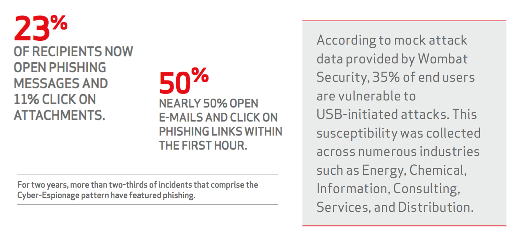
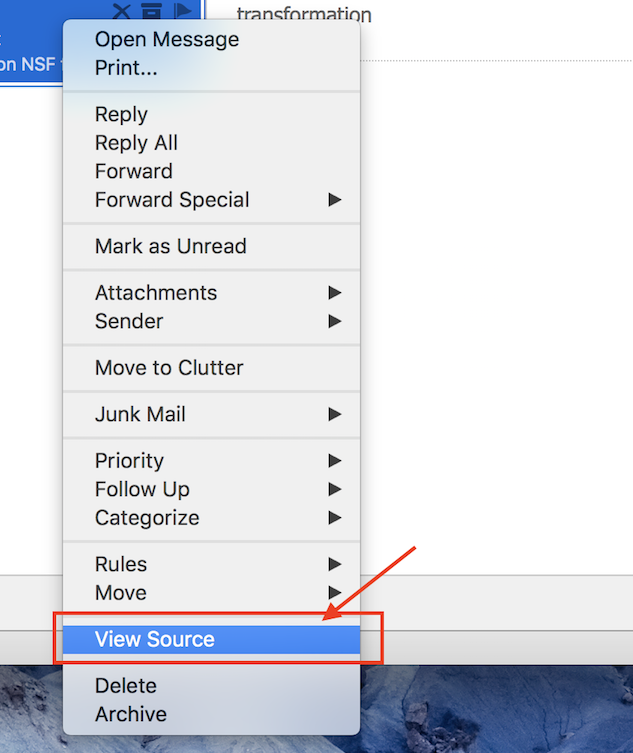
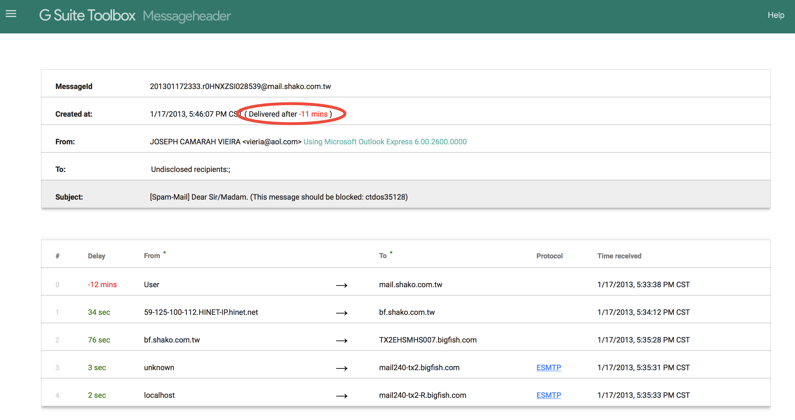

Phishing - Email Header Analysis
Cybersecurity Common sense
[Source: DHS Stop. Think. Connect. Campaign]
-
When in doubt, throw it out: Links in emails, social media posts, and online advertising are often how cybercriminals try to steal your personal information. Even if you know the source, if something looks suspicious, delete it.
-
Think before you act: Be wary of communications that implore you to act immediately, offer something that sounds too good to be true or ask for personal information.
Cybersecurity First Principles
- Layering: Cyber security uses multiple layers of defense or protecting information. If one layer is defeated the next layer should catch it. This lesson emphasizes the human element, that is we as humans have to catch problems (like phishing) that make it past the email-level and browser-level filtering mechanisms.
Table of Contents
Introduction
Email Headers
Headers are like Passports
Exercise
Investigation
Additional Tasks
Additional Readings and Tools
Introduction
Email is an indispensable communication tool. We use it every day. Unfortunately, many attacks also originate in emails. Wouldn’t it be great if everyone had some mad email ninja skills! Don’t worry, at the end of this session, you should feel pretty good about your email analysis skills.
A vigilant, trained and aware human user is a critical layer of defense against threats, both internal and external. Even if malicious URLs and emails get past spam filters and anti-virus software, a human user can catch it. Such a defensive strategy is common in secure system designs. It also demonstrates a cyber security first principle called Layering.
When reading emails, the first item that grabs our attention is the sender’s name, email, and subject. But, it may come as a surprise that spoofing these in an email is a pretty easy thing! It is also effective at fooling unsuspecting email users. Take a look at some of the statistics in the Verizon Data Breach Reports.
Here is an interesting one:
How long does an attacker have to wait to get that foot in the door? We aggregated the results of over 150,000 e-mails sent as part of sanctioned tests by two of our security awareness partners and measured how much time had passed from when the message was sent to when the recipient opened it, and if they were influenced to click or provide data (where the real damage is done). The data showed that nearly 50% of users open e-mails and click on phishing links within the first hour. [Verizon DBIR 2014] 
It did not get any better in 2016: 13% of people tested click on a phishing attachment; median time to click is very short.
Update from 2017: “Phishing via email was the most prevalent variety of social attacks” Social attacks were utilized in 43% of all breaches in the 2017 dataset. Almost all phishing attacks that led to a breach were followed with some form of malware, and 28% of phishing breaches were targeted. Phishing is the most common social tactic in the 2017 dataset (93% of social incidents).
If you are a bad guy planning a heist, Phishing emails are the easiest way for getting malware into an organization. Because of that, it is prudent to understand exactly where an email is really coming from. Do not rush to open attachments or click links in emails. Verizon DBIR states over 99% of malware is sent by either email or web server.
Email Headers
Email Headers hold a lot of information. Much of this information is never displayed to the user. The email reader only sees a select few pieces of information like the subject, date, and the sender’s email and info. The surprising part is that the information that is actually displayed to a user can be easily forged!
Before we get started, consider this email from President Donald Trump to a Researcher at the University of Nebraska at Omaha. They have a great Cybersecurity program. They recently obtained the prestigious CAE-CO (Cyber Operations) designation from NSA. You may read about the available degree programs in Cybersecurity here: https://www.unomaha.edu/college-of-information-science-and-technology/academics/cybersecurity.php

Anyways…we see emails like this all the time using desktop or web-based email clients. The section pointed to by the big red arrow in the figure above, is the part of the email header that most people are familiar with.
There is more to this header. To reveal the full message header, different desktop or web email applications have different methods. Here are instructions to get the full email headers using popular email applications:
Apple Mail

Outlook Desktop Client

Outlook Web Client

Gmail

It is obvious that in all cases, full email headers are hard to find if you don’t know where to look.
Once you do find it, there is a ton of information in the header about the route taken by an email. Let’s look at some actual email headers. Open up the files in the “email-headers” Folder.
Here is the raw message from email-header1.txt
Received: from BL2PRD0711HT001.namprd07.prod.outlook.com (10.255.104.164) by
BY2PRD0711HT003.namprd07.prod.outlook.com (10.255.88.166) with Microsoft SMTP
Server (TLS) id 14.16.257.4; Thu, 17 Jan 2013 23:35:35 +0000
Received: from BL2PRD0711HT002.namprd07.prod.outlook.com (10.255.104.165) by
BL2PRD0711HT001.namprd07.prod.outlook.com (10.255.104.164) with Microsoft
SMTP Server (TLS) id 14.16.257.4; Thu, 17 Jan 2013 23:35:34 +0000
Received: from mail240-tx2-R.bigfish.com (65.55.88.116) by
BL2PRD0711HT002.namprd07.prod.outlook.com (10.255.104.165) with Microsoft
SMTP Server (TLS) id 14.16.257.4; Thu, 17 Jan 2013 23:35:34 +0000
Received: from mail240-tx2 (localhost [127.0.0.1]) by mail240-tx2-R.bigfish.com (Postfix) with ESMTP id A05C032025F for <jerryp@mail.unomaha.edu>; Thu, 17 Jan 2013 23:35:33 +0000 (UTC)
X-Forefront-Antispam-Report: CIP:59.125.100.113;KIP:(null);UIP:(null);IPV:NLI;H:bf.shako.com.tw;RD:59-125-100-113.HINET-IP.hinet.net;EFVD:NLI
X-BigFish: ps73(zz7f52hd926hzz1ee6h1de0h1ce5h1202h1e76h1d1ah1d2ahz58hz8275bhz2ei2a8h668h839h940h10d2h1177h1288h12a5h12a9h12bdh137ah139eh13b6h13eah1441h1537h162dh1631h1758h17f1h184fh1898h300k503k953iwa7jk)
X-FOSE-spam: This message appears to be spam.
X-SpamScore: 73
Received-SPF: neutral (mail240-tx2: 59.125.100.113 is neither permitted nor denied by domain of aol.com) client-ip=59.125.100.113; envelope-from=vieria@aol.com; helo=bf.shako.com.tw ;shako.com.tw ;
Received: from mail240-tx2 (localhost.localdomain [127.0.0.1]) by mail240-tx2
(MessageSwitch) id 1358465731454940_30539; Thu, 17 Jan 2013 23:35:31 +0000
(UTC)
Received: from TX2EHSMHS007.bigfish.com (unknown [10.9.14.242]) by mail240-tx2.bigfish.com (Postfix) with ESMTP id 675424200E7 for <jerryp@mail.unomaha.edu>; Thu, 17 Jan 2013 23:35:31 +0000 (UTC)
Received: from bf.shako.com.tw (59.125.100.113) by TX2EHSMHS007.bigfish.com
(10.9.99.107) with Microsoft SMTP Server (TLS) id 14.1.225.23; Thu, 17 Jan
2013 23:35:28 +0000
Received: from mail.shako.com.tw (59-125-100-112.HINET-IP.hinet.net
[59.125.100.112]) by bf.shako.com.tw (8.14.3/8.14.3) with ESMTP id
r0HNYCgA013928; Fri, 18 Jan 2013 07:34:12 +0800
X-Authentication-Warning: bf.shako.com.tw: Host 59-125-100-112.HINET-IP.hinet.net [59.125.100.112] claimed to be mail.shako.com.tw
Authenticated-By: nobody
X-SpamFilter-By: BOX Solutions SpamTrap 3.5 with qID r0HNXZSI028539, This message is passed by code: ctdos35128
Received: from User (85-250-54-29.bb.netvision.net.il[85.250.54.29])
(authenticated bits=0)
by mail.shako.com.tw (8.14.3/8.14.3/4.90) with ESMTP
id r0HNXZSI028539; Fri, 18 Jan 2013 07:33:38 +0800
X-BOX-Message-Id: r0HNXZSI028539
Message-ID: <201301172333.r0HNXZSI028539@mail.shako.com.tw>
X-Authentication-Warning: mail.shako.com.tw: Host 85-250-54-29.bb.netvision.net.il[85.250.54.29] claimed to be User
Reply-To: <carrr444@yahoo.com>
From: JOSEPH CAMARAH VIEIRA <vieria@aol.com>
Subject: [Spam-Mail] Dear Sir/Madam. (This message should be blocked: ctdos35128)
Date: Fri, 18 Jan 2013 01:46:07 +0200
Content-Type: text/plain; charset="Windows-1251"
Content-Transfer-Encoding: 7bit
X-Mailer: Microsoft Outlook Express 6.00.2600.0000
X-MimeOLE: Produced By Microsoft MimeOLE V6.00.2600.0000
To: Undisclosed recipients:;
Return-Path: 32309uslisidfj@mail.shako.com.tw.com
X-MS-Exchange-Organization-SCL: 7
X-MS-Exchange-Organization-AVStamp-Mailbox: MSFTFF;1;0;0 0 0
X-MS-Exchange-Organization-AuthSource: BL2PRD0711HT002.namprd07.prod.outlook.com
X-MS-Exchange-Organization-AuthAs: Anonymous
MIME-Version: 1.0
Dear Sir/Madam,
my name is Joseph Camarah Vieira, i am from Guinea Bissau, my late father was the former minister of mines in my country Guinea Bissau, he was short dead by the rebels in my country, before his death he deposited $60 million Dollars with Global Trust Security Company Accra Ghana, i want you to help me receive this money in your country for investment in your country i will give you 30% of the total sum when the funds arrive your country.
Regards.
Mr Joseph Camarah Vieira
00233 244 617 863
my email:carrr444@yahoo.com
Discussion:
What are your first thoughts?
Headers are like Passports
Consider a Turkey citizen, who is traveling from the U.S. to China via stops in Germany and India. Authorities in countries in each leg of her trip would record the source and destination of the previous leg in the passport. Assume that she has appropriate visas for all the visited countries. One way to describe the journey in her passport could be as follows, with the most recent entry at the top:
Passenger-Received: from India by China # Chinese Authority
Passenger-Received: from Germany by India # Indian Authority
Passenger-Received: from U.S. by Germany # German Authority
The header is like a passport for your email. The header receives an entry at every stop along the way by the email server it encounters. As a result, the more servers the email is routed through, the longer the header.
Now, if you observe email-header1.txt there seems to be a lot of Received: entries in there.
So, where in this file should we start to trace the email source/origin and the stops that it took to get to the final destination?
Here is some information to help us do this. As an email travels from the source to its destination, each server adds its header entries to the top of the email body. So if we want to trace the email origin, this will be the very first Received: entry encountered from the bottom of the raw email. If you see something like Received-SPF:, ignore it.
For email-header1.txt start scanning from the bottom of the header towards the top and examine the very first Received: entry. It looks like this:
Received: from User (85-250-54-29.bb.netvision.net.il[85.250.54.29])
(authenticated bits=0)
by mail.shako.com.tw (8.14.3/8.14.3/4.90) with ESMTP
id r0HNXZSI028539; Fri, 18 Jan 2013 07:33:38 +0800
The first email server to receive the email from the sender’s computer creates this entry. If the email client is web-based then this entry will include details about the server hosting the email web application.
Let’s further break down this entry. The from part of this entry indicates source of the email for this leg of the travel: User (85-250-54-29.bb.netvision.net.il[85.250.54.29]). You can pick out a Domain Name (85-250-54-29.bb.netvision.net.il) and an IP address (85.250.54.29) here.
The by part indicates the first stop taken after email origin:
mail.shako.com.tw (8.14.3/8.14.3/4.90). You can pick out a Domain Name here: mail.shako.com.tw.
The first encountered email server adds this header entry and every other entry below it. There is a high chance that a malicious sender has full control of this email-server. So do not trust this information.
Regardless, we now have some information to do further investigation. Let’s try to figure out where the geographic location of the email-server.
We can use an online utility like http://network-tools.com and enter the domain name or IP address as a query. Here we use 85-250-54-29.bb.netvision.net.il and mail.shako.com.tw as queries.
SEARCH RESULTS: 85-250-54-29.bb.netvision.net.il
85.250.54.29 is from Israel (IL) in region Middle East
Input: 85-250-54-29.bb.netvision.net.il
canonical name: 85-250-54-29.bb.netvision.net.il
Registered Domain: netvision.net.il
SEARCH RESULTS: mail.shako.com.tw
202.39.131.130 is from Taiwan (TW) in region Southern and Eastern Asia
Input: mail.shako.com.tw
canonical name: mail.shako.com.tw
Registered Domain: shako.com.tw
The searches reveal that a computer in Israel used an email server in Taiwan as the first stop on its way to the U.S., while the actual body of the email claims the sender is from Guinea Bissau. Something is not right!
There are few other fields that you should investigate in the email header.
-
Return-Path:See if the email address in this entry matches the email address in theFrom:entry. They typically will not match for mass emailers like advertisers or spammers. TheReturn-Path:email address is used when an email cannot be delivered to its recipients, and it “bounces back”. Spammers don’t want all the undelivered email to end up in their inboxes! -
Reply-To:See if the email address in this entry matches the email address in theFrom:entry. When you hit reply to an email, theReply-Toentry is used to populate the recipients’ email. If it is different, you may accidentally send your reply to someone else. -
X-Distribution:if this field’s value is bulk. This indicates bulk/spam email. -
X-Mailer:field indicates the email client. If it includes weird names, be suspicious. -
Bcc:orX-UIDL:entries exist. This is a sign of poorly crafted header. They are never in normal emails! -
X-Spam score,X-Spam flagandX-Spam statusentries help determine “spamminess”. But the scores are not standardized across servers so these have to examine on a case by case basis.
Google has an online tool that helps to examine the “hops” and the time delay between them. Large delays in accepting email by the first server may be a sign of overloaded and resource constrained spam servers. Here’s what the tool shows about email-header1.txt. There is a suspicious 12-minute delay right at the beginning, which may indicate an overloaded spam sending email server. Sometimes, the time difference between servers may cause false positives.

Exercise
Open up the files in the “email-headers” Folder using the Google Header analysis tool and then answer the questions in each one of them. Check your answers with a peer. If they differ then work with your peer to come to a final conclusion. Links to the online tools are shown above.
Investigation
What about that email from President Donald Trump?
Here is the raw header:
Received: from CY1PR0701MB1819.namprd07.prod.outlook.com (10.163.42.152) by
SN1PR0701MB1822.namprd07.prod.outlook.com (10.162.100.151) with Microsoft
SMTP Server (version=TLS1_2,
cipher=TLS_ECDHE_RSA_WITH_AES_128_CBC_SHA256_P256) id 15.1.1240.13 via
Mailbox Transport; Wed, 12 Jul 2017 22:49:17 +0000
Received: from SN1PR0701CA0032.namprd07.prod.outlook.com (10.162.96.42) by
CY1PR0701MB1819.namprd07.prod.outlook.com (10.163.42.152) with Microsoft SMTP
Server (version=TLS1_2, cipher=TLS_ECDHE_RSA_WITH_AES_128_CBC_SHA256_P256) id
15.1.1261.13; Wed, 12 Jul 2017 22:49:16 +0000
Received: from BY2NAM01FT042.eop-nam01.prod.protection.outlook.com
(2a01:111:f400:7e42::203) by SN1PR0701CA0032.outlook.office365.com
(2a01:111:e400:5173::42) with Microsoft SMTP Server (version=TLS1_2,
cipher=TLS_ECDHE_RSA_WITH_AES_128_CBC_SHA256_P256) id 15.1.1261.13 via
Frontend Transport; Wed, 12 Jul 2017 22:49:16 +0000
Authentication-Results: spf=none (sender IP is 148.163.152.157)
smtp.mailfrom=loki.ist.unomaha.edu; unomaha.edu; dkim=none (message not
signed) header.d=none;unomaha.edu; dmarc=none action=none
header.from=whitehouse.gov;
Received-SPF: None (protection.outlook.com: loki.ist.unomaha.edu does not
designate permitted sender hosts)
Received: from mx0b-00261b01.pphosted.com (148.163.152.157) by
BY2NAM01FT042.mail.protection.outlook.com (10.152.68.172) with Microsoft SMTP
Server (version=TLS1_2, cipher=TLS_ECDHE_RSA_WITH_AES_256_CBC_SHA384_P384) id
15.1.1240.9 via Frontend Transport; Wed, 12 Jul 2017 22:49:15 +0000
Received: from pps.filterd (m0104361.ppops.net [127.0.0.1])
by mx0b-00261b01.pphosted.com (8.16.0.21/8.16.0.21) with SMTP id v6CMlhnA032537
for <smartprof@unomaha.edu>; Wed, 12 Jul 2017 17:49:15 -0500
Authentication-Results-Original: ppops.net; spf=none
smtp.mailfrom=smartprof@loki.ist.unomaha.edu
Received: from loki.ist.unomaha.edu (loki.ist.unomaha.edu [137.48.187.123])
by mx0b-00261b01.pphosted.com with ESMTP id 2bnsq8rykp-1
for <smartprof@unomaha.edu>; Wed, 12 Jul 2017 17:49:15 -0500
Received: by loki.ist.unomaha.edu (Postfix, from userid 13823)
id 958031E5EE0; Wed, 12 Jul 2017 17:49:14 -0500 (CDT)
To: <smartprof@unomaha.edu>
Subject: Make Cybersecurity Great Again!
X-PHP-Originating-Script: 13823:spoof.php
From: Donald Trump <therealdonaldtrump@whitehouse.gov>
Reply-To: Robin Gandhi <smartprof@unomaha.edu>
Content-Type: text/html; charset="ISO-8859-1"
Message-ID: <20170712224914.958031E5EE0@loki.ist.unomaha.edu>
Date: Wed, 12 Jul 2017 17:49:14 -0500
X-Proofpoint-Spam-Details: rule=inbound_notspam policy=inbound score=1 priorityscore=0 malwarescore=0
suspectscore=10 phishscore=0 bulkscore=0 spamscore=1 clxscore=195
lowpriorityscore=0 impostorscore=0 adultscore=0 classifier=spam adjust=0
reason=mlx scancount=1 engine=8.0.1-1706020000 definitions=main-1707120363
Return-Path: smartprof@loki.ist.unomaha.edu
X-MS-Exchange-Organization-Network-Message-Id: c0790240-3fdc-4b35-078d-08d4c9783957
X-EOPAttributedMessage: 0
X-EOPTenantAttributedMessage: f1f4be86-d048-47e8-aa26-15b01dcdb13d:0
X-MS-Exchange-Organization-MessageDirectionality: Incoming
X-Forefront-Antispam-Report: CIP:148.163.152.157;IPV:NLI;CTRY:US;EFV:NLI;SFV:SKN;SFS:;DIR:INB;SFP:;SCL:-1;SRVR:CY1PR0701MB1819;H:mx0b-00261b01.pphosted.com;FPR:;SPF:None;LANG:en;
MIME-Version: 1.0
<html><head>
<meta http-equiv="Content-Type" content="text/html; charset=iso-8859-1"> </head> <body style="word-wrap: break-word; -webkit-nbsp-mode: space; -webkit-line-break: after-white-space;" class=""> Dear Dr. Gandhi,<br class=""> <br class=""> You are doing very very good work with the Gencyber Camp. <br class=""> Just let me know what you need to make it bigly successful next year!<br class=""> Please put in your funding request here: <a href="https://robinagandhi.github.io/phishing-demo/encoding.html" class="">Grant Application</a><br class=""> <br class=""><div class="">~Yours Truly<br class=""><font color="#ff2600" class="">Donald</font></div></body></html>
Questions:
- What are the
FromandReturn-Pathemail addresses. Do they match? What are they? - What is the name of the sending computer or server?
- Where is the sending computer geo-located?
- What website is linked to “Grant funding request.” in the message?
- How likely is it that this message is spam?
Additional Tasks
Pick a spam email in your inbox. Inspect discrepancies in its headers and investigate the source of the email. Spot traps that can misguide an email user. Share this knowledge with your friends and family.
Phishing emails often appear to be from someone you know. They ask for urgent and critical actions like sending money, sharing bank information and passwords. Double-check the real source of the email. Follow-up with a call to confirm the emergency.
Stay Vigilant!
Additional Readings and Tools
- How to locate raw headers in email clients. mxtoolbox
- Advanced email headers. ARCLAB
- DomainKeys Identified Mail (DKIM), https://en.wikipedia.org/wiki/DomainKeys_Identified_Mail
- Sender Policy Framework (SPF), http://www.openspf.org
Lead Author
- Robin Gandhi
Special Thanks
- A special thanks to Matt Hale, Aaron Vigal and Cade Wollcot for reviews of this module and thoughtful discussions.
License
Nebraska GenCyber 
is licensed under a Creative Commons Attribution-NonCommercial-ShareAlike 4.0 International License.
Overall content: Copyright (C) 2017-2018 Dr. Matthew L. Hale, Dr. Robin Gandhi, Dr. Briana B. Morrison, and Doug Rausch.
Lesson content: Copyright (C) Robin Gandhi 2017-2018.
This lesson is licensed by the author under a Creative Commons Attribution-NonCommercial-ShareAlike 4.0 International License.